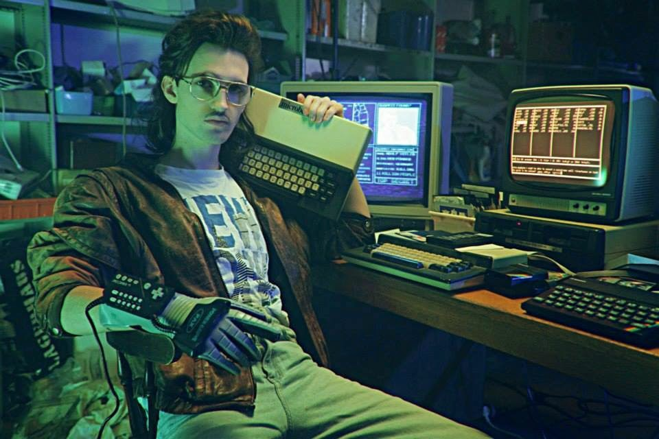
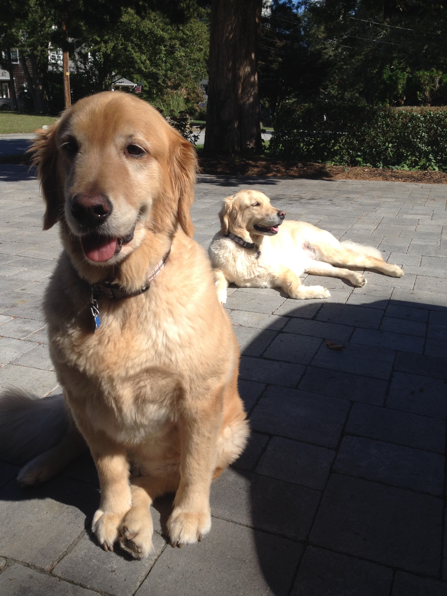

About my journey
Hello! My name is Jameson Arsenault I'm 26 years old and it's been a journey to get where I am today. I got out of high school and didn't know what I wanted to do with my life. I bounced around odd jobs, and decided to continue with college. I attended Bristol Community College and while there met someone who was into computers and programming. Already having and interest in computers we became friends, and he told me about programming. This caught my attention and I looked for a college where I could get hands on experience programming and solving problems. I found New England Institute of Technology in late 2014, and enrolled. I just graduated September 2016 with my Associates Degree in Software Engineering. Now I'm persuing my Bachelor's Degree and will have it completed by September 2018. On my free time I attend Launch Code's LC101 program where I've learned Python basics, and am currently brushing up on my skills in HTML,CSS and learning whatever else they throw at us! I look forward to joining a company where I can be a wonderful addition to a team, or business, while gaining experience from co-workers around me.
Hobbies
In my free time I enjoy playing music, hanging out with friends. Relaxing with two golden retrievers, and learning new things. I enjoy mountain biking, watching hockey (Go Bruins!), video games, and figuring out how things work.
